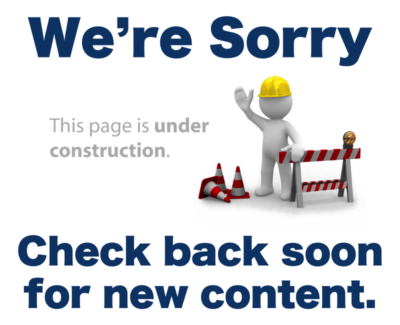

Бучанська міська рада
Міська влада
Міський голова
Міська рада
Члени виконавчого комітету
Структура виконавчих органів
Про місто
Історична довідка
Символіка міста
Міста-побратими
Почесні громадяни
Нормативні документи
Регламент Бучанської міської ради
Регламент виконавчого комітету Бучанської міської ради
Порядок денний сесій міської ради
Проекти рішень
Розпорядження міського голови
Рішення виконавчого комітету
Рішення Бучанської міської ради
Громадська діяльність
Громадська рада
Громадські організації
Політичні партії
Координаційна рада при виконавчому комітеті міської ради
Публічна інформация
Нормативно-правові акти
Порядок складання, подання та опрацювання запитів на інформацію
Перелік інформації, яка підлягає обов'язковому оприлюдненню
Люстрація
Відомості, зазначені у декларації за 2015 р.
Детальні плани територій
План зонування території міста Буча
Контакти
Міська рада
Телефонний довідник міста
Електронне звернення
